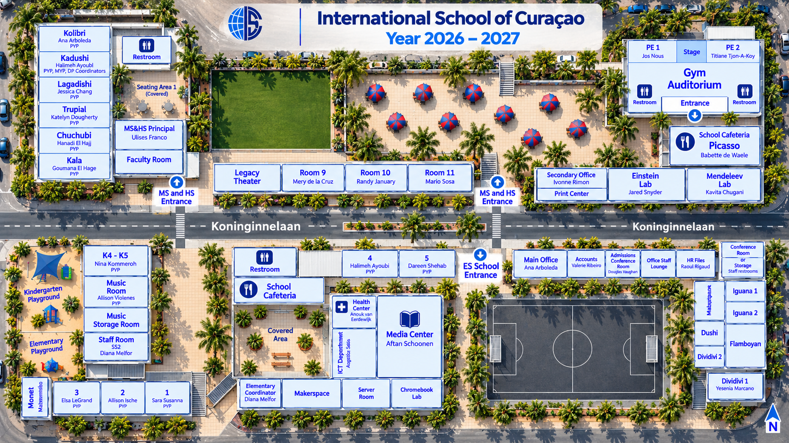

VIRTUAL CAMPUS GUIDE
Explore our campus.
Discover the spaces where our community learns, creates, and connects. Select any classroom or facility on the map to explore.
Early years – Grade 122026–2027Interactive rooms
PREVIEWThis is a preview using the latest ISC 2026–2027 illustrated campus map. Staff assignments, imagery and room details require approval before publishing.
DISCOVER ISC
Find your place.
Choose an area, search for a room, or click directly on the map.
—mapped spaces

A fresh perspective is coming.
ISC's drone image will appear here when available. The room list and details are already accessible in the interactive map view.
A local preview stays on your device. See README for publishing instructions.Aerial hotspots still need alignment. Use the school plan to choose rooms.
Click a space · Drag to pan · Use + / − to zoom
Popular places to explore
START HEREAbout the map
The school plan is based on the latest ISC 2026–2027 supplied campus illustration. Room details are being assembled; opening a classroom does not mean classroom photographs or 360° tours are currently available.
COME SEE FOR YOURSELF
Contact Admissions Your ISC visit starts here.
Our admissions team can help you arrange a visit and learn more about the ISC community.